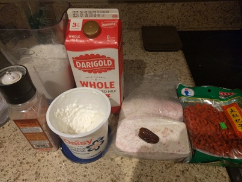
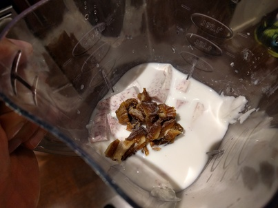

PTGY - Power Taro Goji Yogurt
 
Ingredients:
- Greek Yogurt, milk, salt, taro, goji berries. Date or dried fig works as well.
(The taro will make it more creamy)
How to make it:
Cut the taro (root vegetable) into small chunks and put everything in the blender.